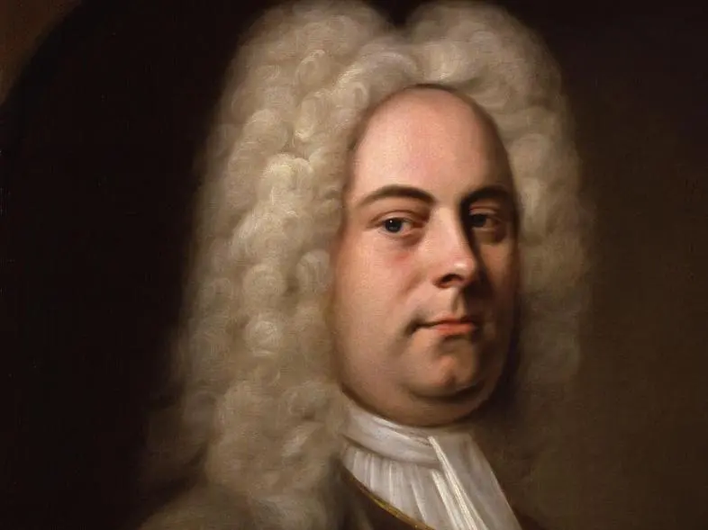

亨德尔

格奥尔格·弗利德里希·亨德尔（Georg Friedrich Handel，1685—1759）出生于德国。
其创作分为以下几个时期。
一、德国时期
亨德尔的爸爸是一名医生，他期望着自己的儿子能够当一个律师，等以后可以为自己撑撑场面。但亨德尔小时候似乎对当一个律师并没有什么兴趣，反而体现出了对音乐的好奇。有一次，亨德尔的爸爸带着小亨德尔和爸爸去一个公爵大佬家里拜访，小亨德看到一家管风琴，随便按了几下，公爵大佬不禁呼喊：“弹的太好了，这是难得一见的音乐天才！！”于是疯狂安利亨德尔的爸爸，让亨德尔去学音乐。亨德尔的爸爸信了，然后按公爵大佬的安排，将亨德尔送到管风琴家扎豪那里学习音乐。
此后，亨德尔就开启了他的音乐之路。他17岁的时候，进入哈雷大学学习，并成为当地教堂的管风琴师；在18岁的时候，亨德尔到了汉堡，在歌剧院里演奏小提琴和羽管键琴，同时自学作曲，期间他创作了3部歌剧和一些小型作品；在21岁时，受到邀请访问了意大利，他在意大利呆了4年，期间会见了很多重要的作曲家，如斯卡拉蒂、科雷利、维瓦尔第等人，并学习了歌剧、清唱剧、协奏曲、康塔塔、奏鸣曲的写作。
这一时期他创作了100多首世俗康塔塔，1部清唱剧和3部经文歌。他在24岁那年年创作的歌剧《阿格丽皮娜》在威尼斯首演，并连续上演了20多场，可见他在这一时期的学习提升是十分迅速的。
在25岁的时候，亨德尔受邀访问的汉诺威和英国。他先到德国接受了汉诺威选帝侯乐长的职位，然后利用假期访问了伦敦，并为英国女王的歌剧院创作了歌剧《里纳尔多》。这部歌剧对于当时的亨德尔来说，是最成功的一部，歌剧演员及乐队的阵容非常强大，排面满满。而在这部作品中，音乐的主题并非是全新创作， 而是亨德尔根据以往的作品主题改编的，这也慢慢成为了亨德尔的一种创作习惯，就是“我抄我自己”。
二、英国时期早期
在亨德尔27岁的时候，再度有机会访问英国。在英国期间，他结识了更多英国的作曲家，创作了至少4部新的意大利歌剧，以及为女王写的《感恩赞美诗》和《安妮女王生日颂歌》等作品。 在亨德尔29岁的时候（1714），安妮女王去世了。
在安妮女王去世后，由于皇室再无子嗣活至成年，所以由皇室的的女婿汉诺威选帝侯继位。选帝侯继位后，亨德尔在英国皇室十分受宠，国王和皇后给他很多钱，并且让他负责皇家公主们的音乐教育，亨德尔此后也留在了英国， 成为了一名英国人。在1717年，皇家要在泰晤士河的游艇上举办游行和音乐会，亨德尔遵旨创作并亲自指挥了三套《水上音乐》组曲，组曲的编制由50多件乐器组成，彰显了英国皇家满满的排面。
F大调第1号组曲
在1718—1719年期间，在国王的支持下，皇室贵族们组建了一个意大利歌剧团，取名为“皇家音乐协会”，亨德尔就顺理成章的称谓了音乐指导。从1720年开业，亨德尔很有热情，招募了当时英国最好的音乐家们，还亲自创作了很多作品， 比如歌剧《朱利奥·凯撒》、《塔莫拉诺》、《罗德琳达》等。这个歌剧团一直经营到了1728年，在亨德尔43岁的时候，出现了危机。
具体发生了什么呢？通过亨德尔之前的学习和创作经历来看，他受到意大利歌剧的影响是很大的，所以就使得他的歌剧都是使用意大利语，且具有意大利音乐的风格，这慢慢让当时的英国人产生了厌烦。加上当时由于歌剧团建立的时间久了， 暴露出了很多体制上的问题。这些都导致“皇家音乐协会”的演出受到了极大影响。
在当时甚至还有英国作曲家佩普什（Johann Pepusch，1667—1752）和盖伊（John Gay）创作了一部用英语演唱的、采用民间民谣和对白的《乞丐歌剧》来嘲讽和讽刺当时的皇室。《乞丐歌剧》在首演后，连续上演了61场，可见当时英国百姓对皇室艺术审美的不满。
此外，在英国还有一些歌剧团来盗版演出亨德尔的歌剧作品。这些都极大的影响了“皇家音乐协会”的票房和收入，最后就算亨德尔在歌剧中加入了英语歌词、加入了法国的芭蕾舞，也无济于事，亨德尔的音乐创作迎来了所未有的打击。
三、英国时期晚期
此后，亨德尔的创作方向发生了变化，他开始了创作清唱剧的尝试，这时他已经47岁。因为正如上文所述，清唱剧和歌剧是有很多类似之处的，但也有很多不同。亨德尔在当时尝试着在英国是否能够通过清唱剧来打开一条新的音乐道路。
他在47岁之后，其实内心底还是对歌剧没太死心，主要创作了《奥兰多》（1733）、《赛尔斯》（1738）、《戴达米亚》（1741），但效果都不太好。他与此同时创作的清唱剧反倒是逐渐有了好的反响，亨德尔起初为了吸引观众，他通过在清唱剧中加入了管风琴演奏的手段来进行创作， 通过《亚历山大的宴席》（1736）、《扫罗》（1738）、《以色列人在埃及》（1739），亨德尔基本探索出了清唱剧的创作模式，并且取得了一定的信心。
1741年，乐善好施的亨德尔在56岁时，为爱尔兰一家慈善机构创作了英语清唱剧《弥赛亚》，这部作品在当时的爱尔兰非常成功，坐无缺席。这部作品使得亨德尔又重新获得了音乐创作上的成功，虽然《弥赛亚》在回到英国的演出不太顺利，但好在在1750之后，逐渐被英国观众接受。著名的《哈利路亚》就是来自于《弥赛亚》。
《弥赛亚》是亨德尔最著名的清唱剧，脚本作者是查尔斯·詹宁斯，作品以《圣经》和英国起到书的诗篇为基础，分别叙述了耶稣的诞生、受难和复活三个部分。
亨德尔《弥赛亚》 Handel: Messiah, HMV 56
亨德尔在60以后，身体状况不佳，但是坚持创作，在1746年创作了清唱剧《犹大·马加比》。1749年，完成英王委托创作了《皇家焰火音乐》。
在1751年，亨德尔创作了他人生最后一部清唱剧《耶弗他》，此时，他已双目失明，完全靠记忆和即兴的演奏，让助手记录自己的作品。
1759年，74岁的亨德尔去世，有数千人参加了他的葬礼。
亨德尔的一生的音乐创作风格基本上以意大利风格为主，同时结合了法国、英国、德国的元素，这种风格的形成与他早期在意大利与多位大师的学习是有一定关系的。 他一生的绝大部分都在创作歌剧，他的歌剧可以分为三类题材，分别为历史题材、神话题材、浪漫题材。而他最优秀的作品还是清唱剧，英语的清唱剧是亨德尔首创的， 他将写歌剧的经验运用到清唱剧的创作之中，并且突出了合唱的地位。亨德尔的器乐作品并不多，但也十分优秀，主要以《水上音乐》和《皇家焰火音乐》为代表。